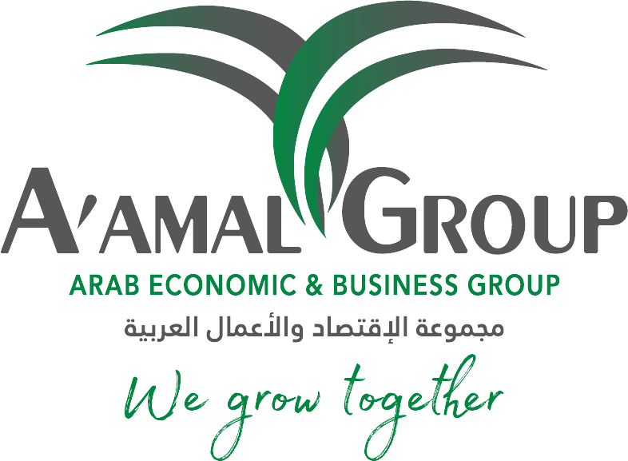

About A'amal Group
We grow together
Building a sustainable future through a diversified group of businesses.


Yassin Al Suroor
A message from our Founder & CEOA'amal Group is a dynamic, transparent and socially responsible group, committed to going the extra mile to fuel the regional economy and improve lives through our business activities. At A'amal, we have a quest for growth — but growing honourably is our code.
We strive to be a regional leader in all our businesses by accurately identifying and managing opportunities, and by building strategic alliances with reputable international companies with outstanding track records. At the same time, we draw on our past experience and core business principles for the strength and courage to move forward in an ever-changing environment.
Today, more than ever, we are committed to building our future through environmentally friendly, state-of-the-art technology and modern management principles.
Last but not least, the strength of A'amal lies in the support of our clients, partners and community. We are ever thankful to them for making us what we are today.
Journey and achievements
Three decades of building A'amal Group — and representing Saudi business on the world stage.
- 1994Founded A'amal Group in Al Khobar, Saudi Arabia
- 2013Presented business recommendations to G20 leaders in St Petersburg as part of the ICC G20 Advisory Group
- 2020Re-elected Vice-Chair of the International Chamber of Commerce, and served on the B20 Saudi Arabia Executive Committee
- 2021A'amal Group joins the United Nations Global Compact
- 2022 – todayMember of the B20 International Business Advocacy Caucus — Indonesia, Brazil and South Africa
Leadership roles
- Vice-Chair, International Chamber of Commerce (ICC), Paris
- Executive Committee Member and G20 Representative, ICC World Chambers Federation
- Executive Committee Member, B20 Saudi Arabia
- Board of Trustees, ICC Merchants of Peace Fund, Paris
- Board Member, Arab-Belgian-Luxembourg Chamber of Commerce
- Co-founder and Executive Board Member, National Role Model Society
- Board member of regional and international companies, and adviser to government agencies on public-private partnership (PPP) investments
Awards
- Best Entrepreneur in Investment
- Family Office Lifetime Achievement Award
- Global Inspirational Leaders Award
- Recognised as a successful entrepreneur by The Gulf Entrepreneur magazine
An impeccable track record since 1994
Since our inception in 1994, A'amal Group has established an impeccable track record of delivering exceptional projects. We are strategically headquartered in the thriving Eastern Province of Saudi Arabia — the hub of one of the world's leading oil producing, refining and exporting regions.
We are a dynamic, transparent and socially responsible group, committed to going the extra mile to fuel the regional economy and improve lives through our business activities.
We understand that every project and every client has individual needs and objectives. That is why we build individual relationships that let us develop the best solution for each and every one of our clients.
Today, A'amal Group stands at the forefront of the 21st century, leading the way with expertise, innovation and a commitment to excellence across Real Estate, Hospitality, Construction Management, Energy Efficiency, Oil & Gas, HR Management, Industry Transformation and Investment.
Vision, mission and values
Our vision
[A'amal's vision statement]
Our mission
[A'amal's mission statement]
Our values
- Quality in everything we deliver
- Safety for our people and partners
- Sustainability for the long term
- Innovation in how we work
Media highlights


Trusted on the world stage
 International Chamber of CommerceVice-Chair
International Chamber of CommerceVice-Chair ICC World Chambers FederationExecutive Committee & G20 Representative
ICC World Chambers FederationExecutive Committee & G20 Representative ICC Saudi ArabiaSaudi national committee of the ICC
ICC Saudi ArabiaSaudi national committee of the ICC B20 Saudi Arabia 2020Executive Committee
B20 Saudi Arabia 2020Executive Committee B20 Indonesia 2022International Advocacy Caucus
B20 Indonesia 2022International Advocacy Caucus B20 Brasil 2024International Advocacy Caucus
B20 Brasil 2024International Advocacy Caucus Arab-Belgian-Luxembourg Chamber of CommerceBoard Member
Arab-Belgian-Luxembourg Chamber of CommerceBoard Member UN Global CompactParticipant since 2021
UN Global CompactParticipant since 2021 G2T AwardsAward recipient
G2T AwardsAward recipient
Where we work
Saudi Arabia
Al Khobar
Malaysia
Kuala Lumpur
Romania
Bucharest
- Al Khobar, Saudi Arabia
- Kuala Lumpur, Malaysia
- Bucharest, Romania